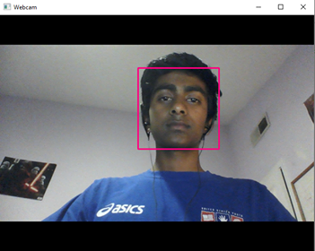
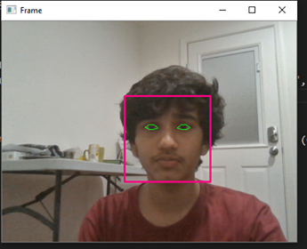
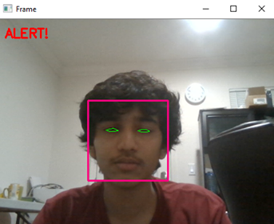

Functionality
Learning about how the product works
Safety Precautions
No matter how advanced a Deep Learning/AI Algorithm may be, it is always important to stay focused and attentive when driving. This includes taking periodic breaks to ensure you are well rested, etc.
Implementation
The DriveSafe automated driving assistant was built through a 5-step cumulative process:
1. A stable, face-monitoring video stream is set up with the use of a webcam
2. The stream is fed to the laptop, which uses deep-learning facial recognition algorithms to detect the presence of the face in the stream
3. Once a face is detected, the algorithm performs eye localization and draws eye-shaped bounds around the driver’s eyes
4. An eye aspect ratio is determined and updated constantly based on the height of the top eyelid to the bottom eyelid. If the height difference ever crosses a certain threshold (reduces) for a given amount of time, the driver is determined to be distracted or sleepy
5. Upon identification, a sound is played constantly until the driver is predicted to be focused
Challenges
Implementing the face detection with the eye detection made it so that there was a lot of lag between frames, leading to less consistent eye detection. We optimized the face detection to have it run a minimal amount of times, and the lag was fixed. A lot of the issue lay with consistency - we had to keep experimenting with parameters to make sure that it would work at least 90% of the time.
Next Steps
Currently, DriveSafe can only be implemented with a webcam and computer--we only had a day to create it. We want to make it more convenient and make it a mobile application that can link with a webcam. In addition to functionality with webcams and bluetooth webcams, the mobile application will utilize GPS libraries to determine if the driver is exceeding speed limits. This product will essentially eliminate common risks that drivers encounter.